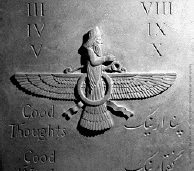

Zerdüştlük, MÖ on sekizinci ve on beşinci yüzyıllar arasında kurulmuş olan, dünyanın en eski tektanrıcı dinidir. Kurucusu, aynı zamanda bugünkü İran’da, eski Pers topraklarında yaşamış varlıklı bir adam olan Zerdüşt idi.

Zerdüşt, otuz yaşında vahiy aldığında, yerel çoktanrılı dine bağlı bir rahipti. İyi ve kötüden sorumlu olan bir tek Tanrı, Ahura Mazda, olduğunu ona anlatan bir melek tarafından ziyaret edildi (Zerdüştlük, aynı zamanda bazen bu tanrıdan isimlendirilerek Mazdaizm olarak da bilinmektedir). Ahura Mazda’nın, bir adamın dokuz katı boyunda olduğu söylenir. Mükemmel bir dünya yaratmaya girişiyordu ve bu görevde hem melekleri hem de insanları işe koydu. Doğal dünyayı – havasını, suyunu ve toprağını – temiz tutmanın önemine vurgu yaptı.
Vahiylerden sonra Zerdüşt, Ahura Mazda’nın öğretilerini yaymaya başladı. Zerdüşt, şimdilerde Zerdüştlük’ün yazmalarının merkezî bir parçası olarak görülen beş Gata, şarkılar ve şiirler yazdı. Avesta adı verilen tamamlanmış yazmalar, beş Gata’dan olduğu kadar Zerdüşt’ün müridi tarafından yazılan Hapatan Haiti’den de oluşur.
Zerdüştlük bugün bir dünya dini olarak var olmasına rağmen, vahiylerin gelmesini takip eden on yıl içinde hiç kimse Zerdüşt’ün dinine katılmadı. Uygulama, her zaman küçük bir takipçi kitlesini çekti. Bundan dolayı Zerdüştlük, daima diğer inançlara karşı hoşgörüyü vurguladığı gibi, farklı dinleri anlama gerekliliğinin de üzerinde durdu.
İlk tektanrıcı din olmasına ek olarak Zerdüştlük, Ahura Mazda’nın her bir kişinin kaderini belirlediği kıyamet gününe, cennete ve cehenneme inanan ilk dindi.
EK BİLGİLER:
1. Bugün Parsîler olarak bilinen, Zerdüştlük’e inanan en büyük nüfus olan yaklaşık 60.000 kadar kişi, Hindistan ve Pakistan’da yaşamaktadır. Kabaca 28.000 kişi İran’da, 37.500 kişi Avrupa’da ve Kuzey Amerika’da yer alır.
2. Zerdüşt’ün cehennem tasviri, oldukça korkutucudur. Efsaneye göre, karanlık, dar bir yarıkta bir kuyu vardır. Korkunç bir koku ve üç günün 9.000 yıl gibi hissedildiği bir yalnızlık duygusu hâkimdir.
3. Zerdüştler, ateş tapınaklarında ibadet ederler. Bu, biraz yanlış yorumlanmıştır; çünkü ateşin kendisine tapınılmaz, o sadece saflığın bir sembolü olarak görülür.